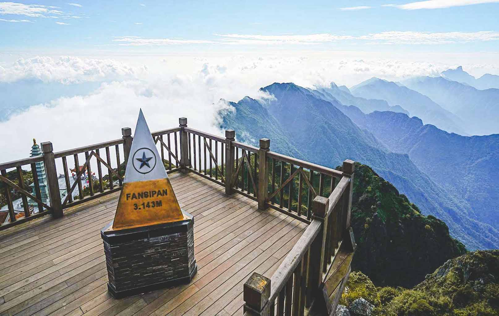
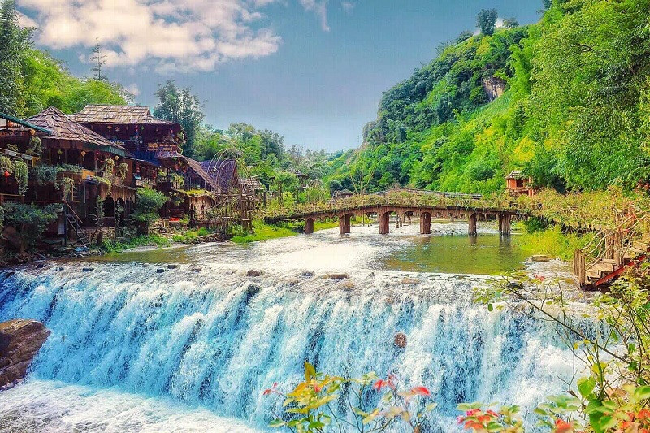
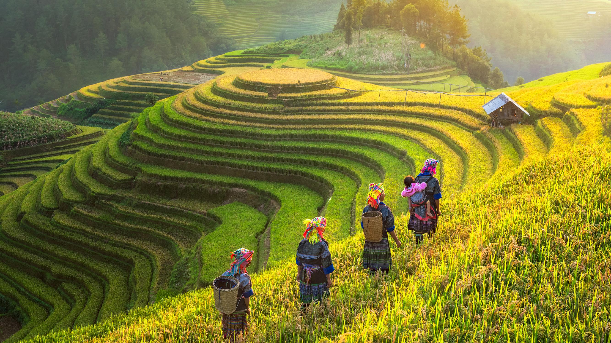
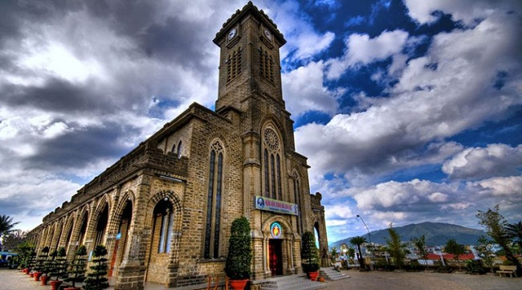
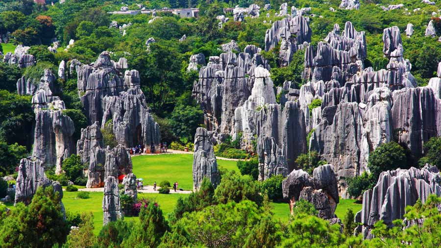
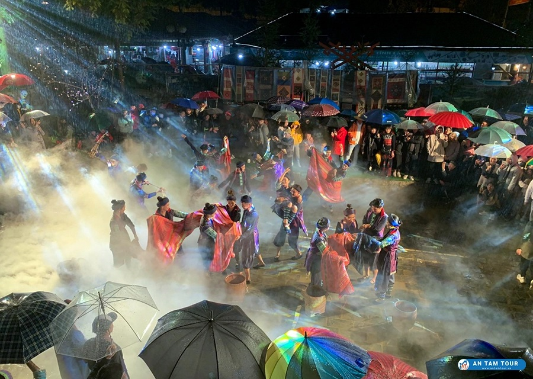
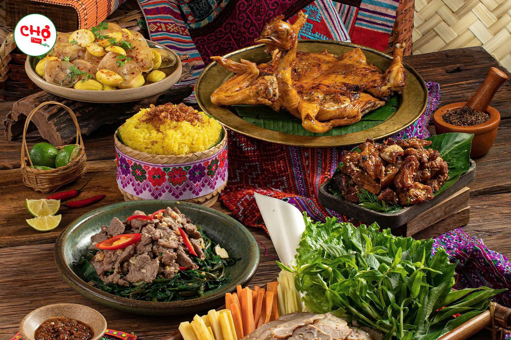
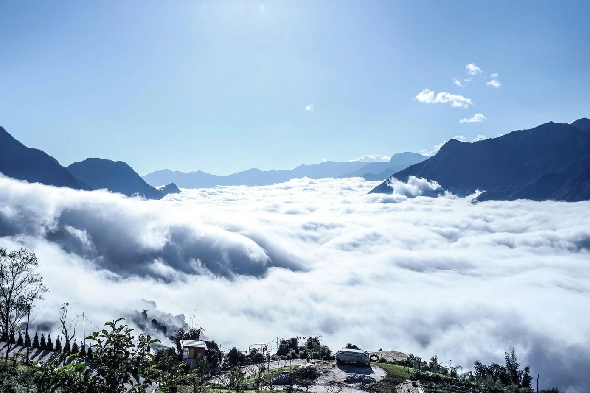

Giới Thiệu Tour
Sa Pa nổi tiếng với khí hậu se lạnh, núi non hùng vĩ, ruộng bậc thang và bản làng vùng cao yên bình.
Điểm Nổi Bật

Đỉnh Fansipan
Chinh phục nóc nhà Đông Dương, ngắm biển mây và núi non hùng vĩ.

Bản Cát Cát
Khám phá bản làng truyền thống, nhà gỗ, suối nhỏ và văn hóa dân tộc H’Mông.

Ruộng Bậc Thang
Chiêm ngưỡng những thửa ruộng uốn lượn theo triền núi, đẹp nhất vào mùa lúa.

Nhà Thờ Đá
Biểu tượng cổ kính của thị trấn Sa Pa, nổi bật giữa màn sương mờ ảo.

Núi Hàm Rồng
Điểm ngắm toàn cảnh thị trấn, vườn hoa và dãy Hoàng Liên Sơn tuyệt đẹp.

Chợ Đêm Sa Pa
Không gian mua sắm, thưởng thức đồ nướng và cảm nhận nhịp sống vùng cao.

Ẩm Thực Tây Bắc
Thưởng thức cá hồi, lợn bản, thắng cố, đồ nướng và các món đặc sản địa phương.

Săn Mây Sa Pa
Tận hưởng khoảnh khắc mây trôi qua núi, tạo nên khung cảnh thơ mộng khó quên.
Lịch Trình Chi Tiết
Ngày 1 — Đến Sa Pa
06:00 — Khởi hành từ Hà Nội.
12:00 — Đến Sa Pa, ăn trưa và nhận phòng.
15:00 — Tham quan nhà thờ đá, quảng trường Sa Pa.
19:00 — Khám phá chợ đêm Sa Pa.
Ngày 2 — Fansipan Và Bản Cát Cát
07:00 — Ăn sáng tại khách sạn.
08:00 — Đi cáp treo Fansipan.
14:00 — Tham quan bản Cát Cát.
19:00 — Ăn tối đặc sản Tây Bắc.
Ngày 3 — Tạm Biệt Sa Pa
08:00 — Tham quan núi Hàm Rồng.
10:30 — Mua đặc sản địa phương.
13:00 — Khởi hành về Hà Nội.
Bảng Giá Tour
| Đối Tượng | Giá | Ghi Chú |
|---|---|---|
| Người lớn | 2.900.000 ₫ | Gồm xe, khách sạn, ăn uống, HDV. |
| Trẻ em 5–11 tuổi | 2.100.000 ₫ | Ngủ chung với người lớn. |
| Dưới 5 tuổi | Miễn phí | Chưa gồm chi phí phát sinh. |
Giá chưa gồm vé cáp treo Fansipan và chi phí cá nhân.
Đánh Giá Khách Hàng
4.8 / 5 ★★★★★
142 đánh giá từ khách đã tham gia tour.
Nguyễn Đức Huy
Lịch trình hợp lý, hướng dẫn viên nhiệt tình, khách sạn sạch.
Hoàng Minh Anh
Sa Pa đẹp, không khí lạnh dễ chịu, cảnh Fansipan rất ấn tượng.